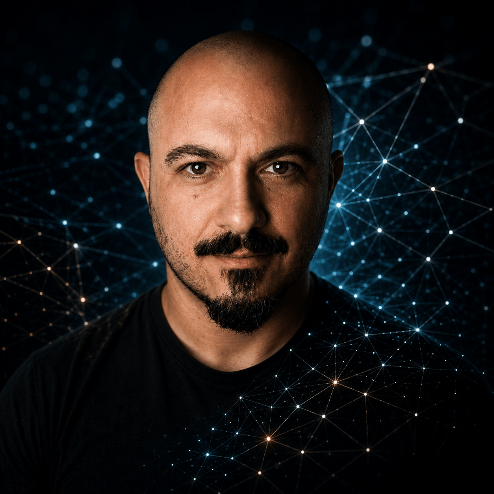

Software engineering is changing.
The difficult part is no longer generating code.
It is designing the system around the agents.
Exploring how Codex, Claude and automation combine into reliable software-development workflows, and applying those methods to real products.
A UK local-services discovery platform. Growth, search authority and affiliate revenue first — subscriptions later, if ever.
Enter the cluster →A mobile companion for Sentry: focused alerts and informed triage away from the desk. Deliberately unlaunched while liability protections mature.
Enter the cluster →The default operating pattern: no agent writes production code before its plan has survived an adversarial challenge.
Follow the route →Where the automation continuum actually pays: replacing an agent loop with forty lines of deterministic shell.
Read in Field Notes →Products generate engineering problems. Problems become workflows. Workflows harden into automation. What the work teaches becomes field notes — and the notes route back into the products. Open the lattice map to travel the structure directly.
Built in the Real World
Products as evolving systems, not case-study trophies. Each cluster holds the product, its architecture, the agents that work on it, the automation around it, the commercial model, and the questions still open.
FoundMyPro
Most local search is built around premises: a pin on a map, an address, opening hours. That works for shops — and fails the mobile professionals who come to you. A plumber, mobile hairdresser or dog groomer with no storefront is nearly invisible in map-based tools, which surface the traditional in-store options instead. FoundMyPro exists to give these come-to-you professionals a place of relevance online: structured provider and service data organised around where they work rather than where they sit, strong local search, and an affiliate model that earns from connections rather than charging providers before the platform has proven its value.
{{ f.body }}
How far affiliate revenue scales before provider-side products make sense. Whether programmatic local pages hold rankings as search itself becomes answer-driven.
Operating a real platform disciplines ambition: every feature competes with data quality work, and data quality usually wins. Speed came from cutting scope, not adding agents.
Sentinel for Sentry
A mobile companion for software teams that need a clear view of production when they are away from a desk. It turns selected Sentry events into focused alerts, brings the evidence needed for a first assessment onto the phone, and supports deliberate triage without trying to replace Sentry or a paging platform.
{{ f.body }}
No invented metrics, customers or revenue appear on this page. Numbers arrive when they exist.
Engineering the Workflow
Agentic development is not "ask AI to build the app". It is the deliberate design of context, constraints, permissions, feedback loops, checkpoints, independent verification, escalation rules and ownership — across the whole lifecycle, without surrendering engineering judgement.
{{ stageDetail }}
WHERE AGENTS FAIL
The workflow exists because these failure modes are predictable. Each one is a terminated path in the lattice: observed, named, and designed around.
Agent Operating Patterns
A library of reusable patterns. Each defines the problem, the routing of work between human and agents, how the output is validated, and — as importantly — when not to use it.
Research → Plan → Challenge → Implement → Review
{{ pf.body }}
{{ p.problem }}
NOT WHEN · {{ p.notWhen }}
Remove the Repetition
Scripts, tools and small systems that eliminate repetitive engineering work. Two rules govern everything here: automation is a continuum, and not every task deserves an agent — a deterministic script is often cheaper, safer and better.
{{ a.body }}
Value per Subscription
Getting the most from Codex, Claude and similar subscriptions — without brand worship. The useful question is not "which model is best" but which role each tool plays in a workflow, and when a local script makes the whole question moot.
{{ roleBody }}
DISCIPLINE · {{ roleDiscipline }}
Slide the characteristics of a task; the recommendation describes workflow shape, not prices or capabilities. Where live data would be needed, this stays deliberately conceptual. [VERIFY current subscription limits before relying on any cost assumption]
—{{ cl.text }}
Experiments in Progress
Unfinished by design. Discarded experiments stay visible — knowing when to stop is part of the method.
{{ l.body }}
What the Work Teaches
Writing that accumulates rather than scrolls. Every note is connected to the system or workflow it came from — follow a note back to its origin and the route lights up.
{{ n.body }}
The Engineer Behind the System

Software engineer with enterprise application experience, building products on the side and treating AI-assisted development as an engineering discipline rather than a shortcut.
Before software: years leading hospitality operations. That background still shows — service as a standard rather than a slogan, calm under pressure, and attention to the operational details that decide whether a system actually works for the people using it.
The current focus is agentic software development: designing the context, constraints and verification around AI agents so their speed becomes reliable output. The products on this site are where those methods get tested against reality.
Preference: useful systems over demonstrations. If it doesn't run in production, it's a hypothesis.